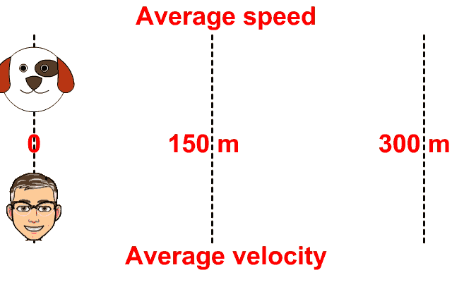
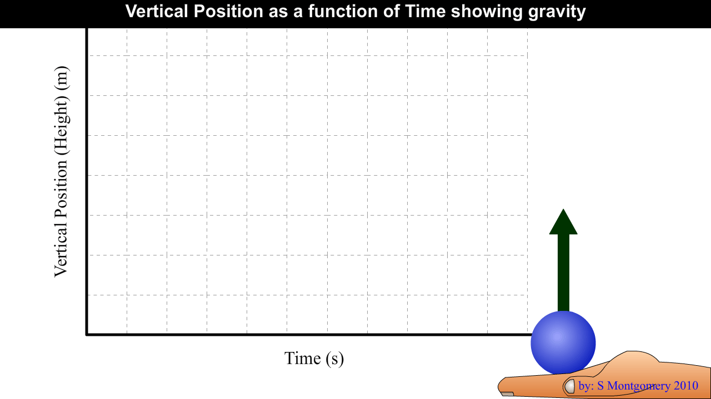

PHYSICS 20
Unit 1: Kinematics
Unit Themes and Emphases
Change and SystemsFocusing Questions
- How do changes in position, velocity, and acceleration allow us to predict the paths of moving objects and systems?
- How do the principles of kinematics influence the development of new mechanical technologies?
Unit A: Kinematics
Themes: Change and SystemsOverview: In this unit, students investigate changes in the position and velocity of objects and systems in a study of kinematics.
This unit builds on:
- Grade 7 Science, Unit D: Structures and Forces
- Grade 8 Science, Unit D: Mechanical Systems
- Science 10, Unit B: Energy Flow in Technological Systems
Unit A will require approximately 15% of the time allotted for Physics 20.
Links to Mathematics: Refer to page 20.
Focusing Questions:
- How do changes in position, velocity and acceleration allow us to predict the paths of moving objects and systems?
- How do the principles of kinematics influence the development of new mechanical technologies?
There is one major outcome in this unit.
Students will:
A1. describe motion in terms of displacement, velocity, acceleration and time.
Key Concepts: The following concepts are developed in this unit and may also be addressed in other units or in other courses. The intended level and scope of treatment is defined by the outcomes.
- scalar quantities
- vector quantities
- uniform motion
- uniformly accelerated motion
- two-dimensional motion
General Outcome A1. students will describe motion in terms of displacement, velocity, acceleration and time.
Specific Outcomes for KnowledgeStudents will:
20–A1.1k define, qualitatively and quantitatively, displacement, velocity and acceleration
20–A1.2k define, operationally, and compare and contrast scalar and vector quantities
20–A1.3k explain, qualitatively and quantitatively, uniform and uniformly accelerated motion when provided with written descriptions and numerical and graphical data
20–A1.4k interpret, quantitatively, the motion of one object relative to another, using displacement and velocity vectors
20–A1.5k explain, quantitatively, two-dimensional motion in a horizontal or vertical plane, using vector components.
Specific Outcomes for Science, Technology and Society (STS) (Nature of Science Emphasis)
Students will:
20–A1.1sts explain that the goal of science is knowledge about the natural world (NS1)
- identify common applications of kinematics, such as determining the average speed of a run, bike ride or car trip, or the acceleration required to launch an aircraft from a carrier
20–A1.2sts explain that scientific knowledge is subject to change as new evidence becomes apparent and as laws and theories are tested and subsequently revised, reinforced or rejected (NS4)
- analyze lunar free fall as illustrated in a video
20–A1.3sts explain that the process for technological development includes testing and evaluating designs and prototypes on the basis of established criteria (ST5d) [ICT C6–4.5]
- investigate the application of kinematics principles, such as determining the appropriate length of airport runways, the design of merging lanes or the timing of traffic lights
Specific Outcomes for Skills (Nature of Science Emphasis)
Initiating and Planning
Students will:
20–A1.1s formulate questions about observed relationships and plan investigations of questions, ideas, problems and issues
- identify, define and delimit questions to investigate; e.g., What are the relationships among displacement, velocity, acceleration and time? (IP–NS1)
- explain why distances are measured in different units (as the crow flies, days of travel, mileage from city centre to city centre, light years).
Performing and Recording
Students will:
20–A1.2s conduct investigations into relationships among observable variables and use a broad range of tools and techniques to gather and record data and information
- perform an experiment to demonstrate the relationships among displacement, velocity, acceleration and time, using available technologies; e.g., interval timers, photo gates (PR–NS2, PR–NS3) [ICT C6–4.4]
- collect information from various print and electronic sources to explain the use of kinematics concepts; e.g., the synchronization of traffic lights (PR–ST1) [ICT C1–4.1].
Analyzing and Interpreting
Students will:
20–A1.3s analyze data and apply mathematical and conceptual models to develop and assess possible solutions
- construct graphs to demonstrate the relationships among displacement, velocity, acceleration and time for uniform and uniformly accelerated motion (AI–NS2)
- analyze a graph of empirical data to infer the mathematical relationships among displacement, velocity, acceleration and time for uniform and uniformly accelerated motion (AI–NS2) [ICT C7–4.2]
- solve, quantitatively, projectile motion problems near Earth’s surface, ignoring air resistance (AI–NS3)[ICT C6–4.1]
- relate acceleration to the slope of and displacement to the area under, a velocity-time graph (AI–NS2, AI–NS6) [ICT C7–4.2]
- analyze uniform motion examples, using computer simulations (AI–NS3) [ICT C6–4.4].
Communication and Teamwork
Students will:
20–A1.4s work collaboratively in addressing problems and apply the skills and conventions of science in communicating information and ideas and in assessing results
- use appropriate Système international(SI) units, fundamental and derived units and significant digits (CT–NS2)
- use appropriate numeric, symbolic, graphical and linguistic modes of representation to communicate ideas, plans and results (CT–NS2)
- use delta notation correctly when describing changes in quantities (CT–NS2).
To be developed throughout the course.
Links to Mathematics
The following mathematics outcomes are related to the content of Unit A but are not considered prerequisites.
Concept - Mathematics Course, Strand and Specific Outcome
Data Collection and Analysis
- Grade 9 Mathematics, Statistics and Probability (Data Analysis),Specific Outcome 3
- Mathematics 10C,Measurement,Specific Outcomes 1 and 2;
- Mathematics 10-3, Measurement, Specific Outcome 1;
- Mathematics 20-3, Algebra, Specific Outcome 3
- Mathematics 10C, Measurement, Specific Outcome 4;
- Mathematics 10-3, Geometry, Specific Outcomes 2 and 4
- Mathematics 20-2,Measurement,Specific Outcome 1
- Mathematics10C, Relations and Functions,Specific Outcomes 1, 4 and 7;
- Mathematics 20-3, Statistics,Specific Outcome 1 Solving Equations
- Grade 9 Mathematics, Number, Specific Outcome 6
- Mathematics 20-2,Measurement,Specific Outcome 2;
- Mathematics 20-3, Geometry, Specific Outcome 2
- Mathematics10C, Relations and Functions,Specific Outcomes3 and 5;
- Mathematics 20-3, Algebra, Specific Outcome 2 Area Calculations
- Mathematics 10-3, Measurement, Specific Outcome 4
- Mathematics10C, Algebra and Number, Specific Outcome 3
Chapter 1: Graphs and equations describe motion in one dimension
Key Concepts
- Workplace Hazardous Materials Information System (WHIMIS) and safe practices
- Evidence of chemical change
- How chemical substances meet human needs
Learning Outcomes
- Illustrate an awareness WHMIS guidelines, and demonstrate safe pracitices guidelines, and demonstrate safe practices in handling, storing, and disposing of chemicals in the laboratory and at home.
- Provide examples of how early humans worked with chemical substances to meet their basic needs
- Outline the role of evidence in the development of the atomic model consisting of nucleons (protons and neutrons) and electrons through the work of Dalton, Thomson, Rutherford, and Bohr.
- Describe evidence for chemical change.
1.1 The Language of Motion
Kinematics – a branch of physics that describes motionA scalar quantity consists of a magnitude (number) and a unit.
Ex. Distance = 10 m; Speed = 20 kph; Temperature = 298 oK
A vector quantity consists of a magnitude (number), a unit, and a direction.
Ex. Displacement = 10 m [North]; Velocity = 120 m/s [West]
Vectors quantities can be identified by the arrow above the symbol.
Ex. Displacement ; Velocity
Not all scalar quantities have vector equivalents. All vectors have scalar equivalents.
| Scalar | Vector |
| distance | displacement |
| speed | velocity |
| temperature |
Origin – a reference point
Position – the straight line distance between the origin and an object’s location; includes magnitude and direction

Distance is the length of the path taken to travel from one position to another.
Displacement is the change in position.
It is measured from where the object starts (point A) to where the object finishes (point B).
1.2 Position-time Graphs and Uniform Motion
velocity| Example Velocities | |
|---|---|
| 0.3 × 10-9 m/s | Contental drift |
| 0.013 m/s | Garden snail |
| 1.0 m/s | average human walking speed |
| 11.8 m/s | Usain Bolt's maximum running speed at 2009 World Championships |
| 25 m/s | peak speed of a galloping horse |
| 30 m/s | cheetah (fasted land animal) or sailfish (fastest fish) |
| 36 m/s | Sam Whittingham in a recumbant bike, fastest human powered vehicle |
| 90 m/s | Perigrine falcan (fastest bird diving), high speed train |
| 113 m/s | Bugatti Veyron (fastest production car) |
| 343 m/s | approximate speed of sound (speed is temperature and pressure dependent) |
| 347 m/s | Thrust SSC (first car faster than sound) |
| 981 m/s | SR-71 Blackbird (fastest jet plane) |
| 1 815 m/s | X-15 (fastest airplane, rocket powered) |
| 3 111 m/s | X-43 scramjet test (unmanned test drone) |
| 9 604 m/s | Space Shuttle |
| 70 220 m/s | Helio 2 solar probe (fastest man made object) |
| 30 000 000 m/s | speed of an electron in a cathode ray tube (old TV) |
| 299 792 458 m/s | speed of light (use 3.00 × 108 m/s) |
A position-time graph for an object at rest is a straight line with zero slope.
A position-time graph for an object moving at a constant velocity is a straight line with non-zero slope.
The greater the slope of a position-time graph, the faster the object is moving.
What is the equation for velocity?
| v = | Δd |
→
→
|
| Δt |
v - velocity, m/s
t - time, s

Review Questions
What does the slope of a distance vs time graph represent?What does a positive slope on a distance vs time graph represent?
What does a negative slope on a distance vs time graph represent?
1.3 Velocity-time Graphs: Uniform and Non-uniform Motion
A velocity-time graph for an object experiencing uniform motion is a horizontal line.
The slope of a velocity-time graph represents acceleration, , m/s2
| aave = | Δv |
→
→
|
| Δt | ||
| aave = | vf - vi |
→
→
→
|
| Δt |
a - acceleration, m/s2
v - velocity, m/s
t - time, s
The position-time graph for an object undergoing uniformly accelerated motion is a curve.
The corresponding velocity-time graph is a straight line with non-zero slope.
The corresponding acceleration-time graph is a horizontal line.
1.4 Analyzing Velocity-time Graphs
The area under a velocity-time graph represents displacement; slope represents acceleration.
A dog runs at 10 m/s [E] for 30 seconds and then runs at 7.5 m/s [W] for 20 seconds.
a) What is the dog’s average speed?
b) What is the dog’s average velocity?
| d1= v1t1 d1= 10 m/s [E] · 30 s d1= 300 m [E] |
d2= v2t2 d2= 7.5 m/s [W] · 20 s d2= 150 m [W] |
 |
|
| speed = distance / time v = d / t v = 300 m + 150 m / 30 + 20 s v = 9.0 m/s |
velocity = displacement / time v = d / t v = 300 - 150 m [E] / 30 + 20 s v = 3.0 m/s [E] |
A person runs a lap of a 400 m track in 60 seconds. What is the person’s average velocity?
A race car needs to average 90 km/h to qualify for a race. The race car travels the first 45 km at 55 km/h. How fast must the car travel the second 45 km in order to average 90 km/h?
A police car travelling at 35 m/s is chasing a stolen car travelling at 28 m/s. The stolen car has a 500 m head start. How long will it take the police car to catch the stolen car?
1.5 The Kinematics Equations
| Δd = | (vf + vf ) × t |
→
→
|
→
|
|
| 2 | ||||
| or | ||||
| Δd = | (vf + vf ) | × t |
→
→
|
→
|
| 2 |
| Δd = vi Δt + | a Δt2 |
→
→
|
→
|
| 2 |
| Δd = vf Δt - | a Δt2 |
→
→
|
→
|
| 2 |
|
vf2 = vi2 + 2aΔd |
→ → → |
d - displacement, m
t - time, s
v - velocity, m/s
a - acceleration, m/s2
1.6 Acceleration due to Gravity
 Gravity is a force that pulls all objects downward.Acceleration due to gravity is 9.81 m/s2 [down]
This is an average Alberta value for the diploma exam. The acceleration due to gravity will be different in different locations as we will see later.
Projectile motion – motion in a vertical plane
Projectile – an object released or thrown into the air (no outside forces ie. No wings or engine)
Ex. Thrown ball, bullet, person jumping
At maximum height, a projectile’s vertical velocity is zero.
The time taken to reach maximum height equals the time taken to fall back down to the original height.
Program of Studies
Alberta Physics 20
Program of Studies

Alberta Physics 20
Program of Studies
Contact me:
BCHS Barrhead AB
Steven Montgomery
steven.montgomery@pembinahills.caBCHS Barrhead AB
Textbook
Physics 20 & 20 Textbook (2009)

Physics 20 & 20 Textbook (2009)